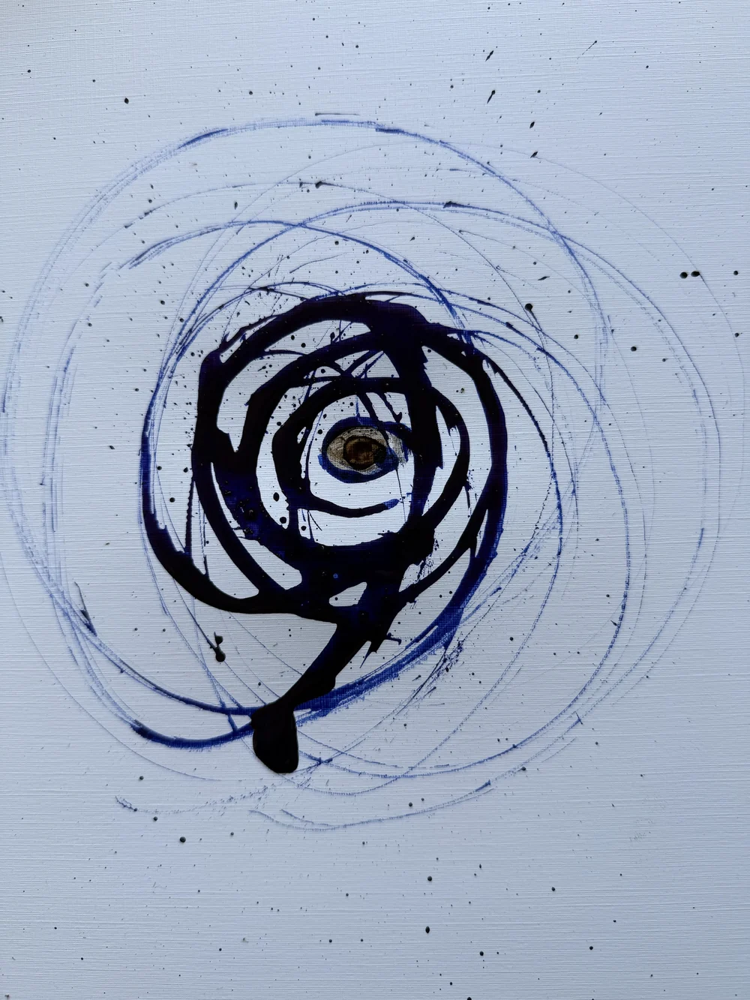
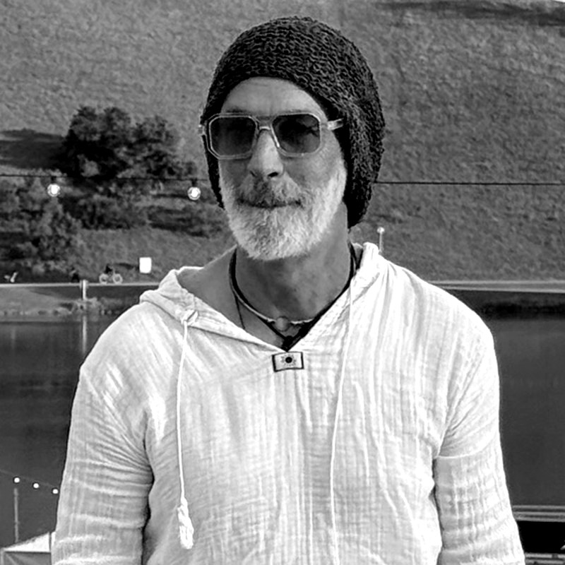

— Schaffensmenschen
— Schaffensmenschen
Wir sprengen Grenzen.Wir schaffen Raum. We break boundaries.We create space.
Ein Raum ohne Verpflichtung.
Zeig, was gerade entsteht — ein Foto, eine Skizze, eine Frage.
Kein fertiges Werk. Keine Bewerbung.
A space without obligation.
Show what's taking shape — a photo, a sketch, a question.
No finished work. No application.

Aus Illusionen werden Visionen. Aus Visionen werden Räume. From illusions come visions. From visions come spaces.
Warum  .
Why
.
Why  .
.
Schaffen ist selten geradlinig. Bevor ein Werk fertig ist, gibt es Zwischenstände, offene Fragen
und Versuche ohne Namen. Dafür fehlte ein Ort.
 ist dieser Ort: Hier zählt der Weg so viel wie das Ergebnis.
Creating is rarely a straight line. Before a work is finished, there are stages, open questions
and attempts without a name. That needed a place.
ist dieser Ort: Hier zählt der Weg so viel wie das Ergebnis.
Creating is rarely a straight line. Before a work is finished, there are stages, open questions
and attempts without a name. That needed a place.
 is that place: here the way counts as much as the result.
is that place: here the way counts as much as the result.
Anders heißt: ohne Erlaubnis. Different means: without permission.

Die IdeeThe idea
Bernd Neichsner
Gründer und Visionär von OFFFENFounder and visionary of OFFFEN
Von ihm stammt die Idee: ein Raum, in dem Schaffende zeigen, was entsteht — bevor es fertig ist. The idea is his: a space where creators show what is taking shape — before it is finished.
Zum ProfilTo the profileWasWhat
Hier zeigst du, wie etwas entsteht, bevor es fertig ist. Skizzen, Versuche, Fragen — und ab und zu das fertige Werk. Here you show how something comes to be, before it is finished. Sketches, attempts, questions — and sometimes the finished work.
Für wenFor whom
Für alle, die etwas schaffen — ganz gleich in welcher Form, welchem Stadium oder welcher Sprache. Mit oder ohne fertiges Portfolio. For anyone who creates — in whatever form, stage or language. With or without a finished portfolio.
Was kann ich tunWhat can I do
Zeig, was gerade entsteht, ein Foto reicht. Sieh, woran andere arbeiten. Gib Rückmeldung und hol dir welche. Show what's taking shape, a photo is enough. See what others are working on. Give feedback and get some.
Ideen im Werden.Ideas in the making.
Deine Idee muss noch nicht fertig sein.Your idea doesn't need to be finished yet.
Schick ein DetailSend a detailFolg dem ProzessFollow the process
@offfen.schaffensmenschen